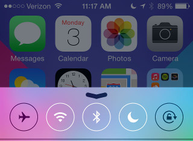

Ne pas déranger
En mettant le bouton 'ne pas déranger' (le croissant de lune) en fonction, vous empêcherez votre appareil d'émettre des sons et des notifications.
Celles-çi continuerons d'être reçues mais seront cachées jusqu'à ce que vous déverrouillez l'appareil.